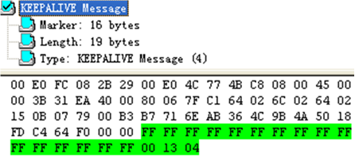

BGP KEEPALIVE报文格式
报文格式
如果BGP报文头中的TYPE为4，则该报文为KEEPALIVE报文。KEEPALIVE报文用于保持BGP连接。
KEEPALIVE报文只有BGP报文头，没有具体内容，故其报文长度应固定为19个字节。
报文实例

参考标准
标准
描述
RFC 827
Exterior Gateway Protocol (EGP)
RFC 2918
Route Refresh Capability for BGP-4
RFC 4271
A Border Gateway Protocol 4 (BGP-4)
父主题：
BGP报文格式
本资料收集于互联网
2016 ©